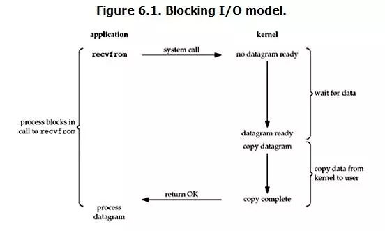

BIO diagram
- 
- create / destory thread is expensive
- each thread need 0.5-1 MB memory
- context switch

- a file descriptor takes up more than two bytes of RAM
NIO diagram
- 2 system call
- kernel mode && application mode
- single thread handle req
- use block transfer
- recommand to use when connections > 1k
- MaxDirectMemorySize
- 2 system call
AIO diagram
- no block at each step
- able to use multicore CPU
- takes more memory & cpu
- MaxDirectMemorySize
push messaging
- push messaging share 90% code of Zuul2
- major component: zuul server (stateful), message processor , Kafka , Redis
- randomize
- zuul push optimalize
- create m4 machine rather than big vm
- websocket randomly close connections
- send command to let client close connection